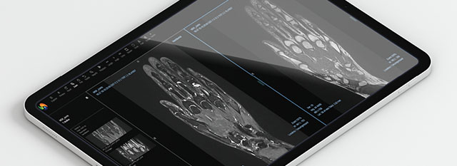
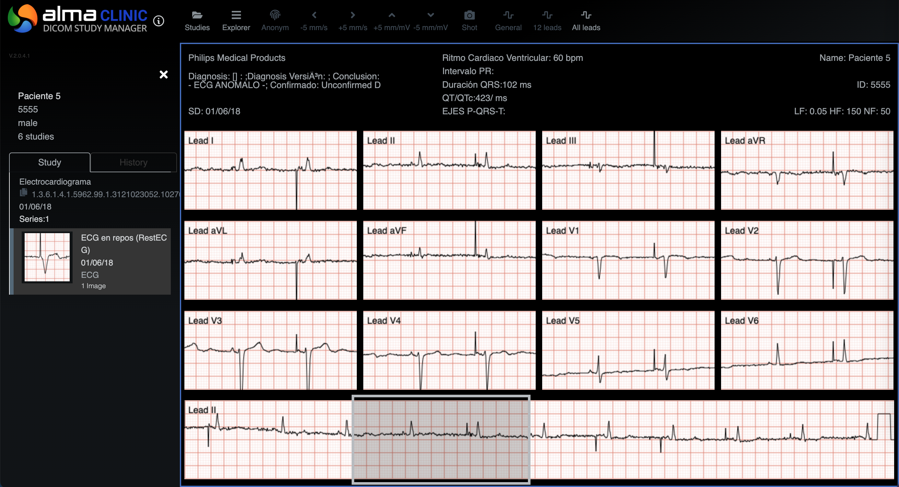

ALMA MEDICAL
#Frontend Development
Coding a medical DICOM viewer. Made at Alma Medical SL.
The Target
Alma 2D Viewer is a portable, device-agnostic medical imaging application that offers healthcare professionals advanced tools for visualizing and analyzing radiological studies. It ensures a secure, non-traceable environment for handling medical images.
The Scope
Alma 2D Viewer is part of Alma Medical's proprietary ecosystem of radiology imaging solutions. My role centered on developing the frontend interface, enabling an effective visualisation, interaction and communication with diverse PACS (Picture Archiving and Communication Systems).
The Engine
The platform employs a robust web technology stack: React on the client side, integrating open source OHIF (Open Health Imaging Foundation) viewer modules to support DICOMWeb standards (WADO-RS, QIDO-RS, STOW-RS) and traditional DICOM formats using cornerstone.js, adapting dicom-parser and custom-built code tailored to client needs. Key Contributions:
-
Custom Image Viewer Interface
- Designed and adapted a dynamic, responsive 2D viewer tailored to client-specific requirements.
-
Tool Customization
- Enhanced OHIF and proprietary tools to optimize workflows, including viewport synchronization, visualization options for multi-image studies, segmentation, and MPR palettes.
-
3D Software Integration
- Integrated proprietary 3D software, enabling Multi-Plane Reconstruction (MPR) and volumetric views.
-
Backend Integration
- Implemented seamless communication between frontend and backend to fetch, process, and render high-resolution medical images in real-time.
-
Compliance and Accessibility
- Ensured adherence to medical data privacy regulations and incorporated accessibility features to accommodate diverse user needs.
The Challenge
Adapting the OHIF viewer to meet diverse client requirements posed significant challenges, particularly in tailoring workflows to specific use cases. This involved extending and modifying existing tools, implementing custom features such as synched viewports, multi-image visualizations or ECG (Electro Cardio Graph). Integrating proprietary 3D software for MPR (Multi-Plane Reconstruction) and volumetric views required attention to detail to ensure interoperability with the 2D viewer and backend systems. Another challenges were gaining a deep understanding of the DICOM standard, including parsing its extensive metadata and handling the nuances of medical imaging protocols. Balancing performance, compliance with medical data regulations, and accessibility added further complexity to the project.
The Process
The development involved iterative prototyping and close collaboration with stakeholders, including radiologists and UX designers, to refine workflows and ensure an intuitive user experience.
Validation
Deployed across various clinics and widely used by radiologists, Alma 2D Viewer became a cornerstone product in the company’s portfolio. It delivers a portable, non-traceable solution for rapid diagnostics, supporting a range of devices including desktops, tablets, and smartphones.

Learnings
This project allowed me to deepen my expertise in frontend development for high-stakes environments. I gained experience in optimizing complex visual rendering pipelines, designing interfaces that align with user needs, and ensuring compliance with industry regulations. It was an enriching opportunity to contribute to a product that directly impacts patient care and medical outcomes.